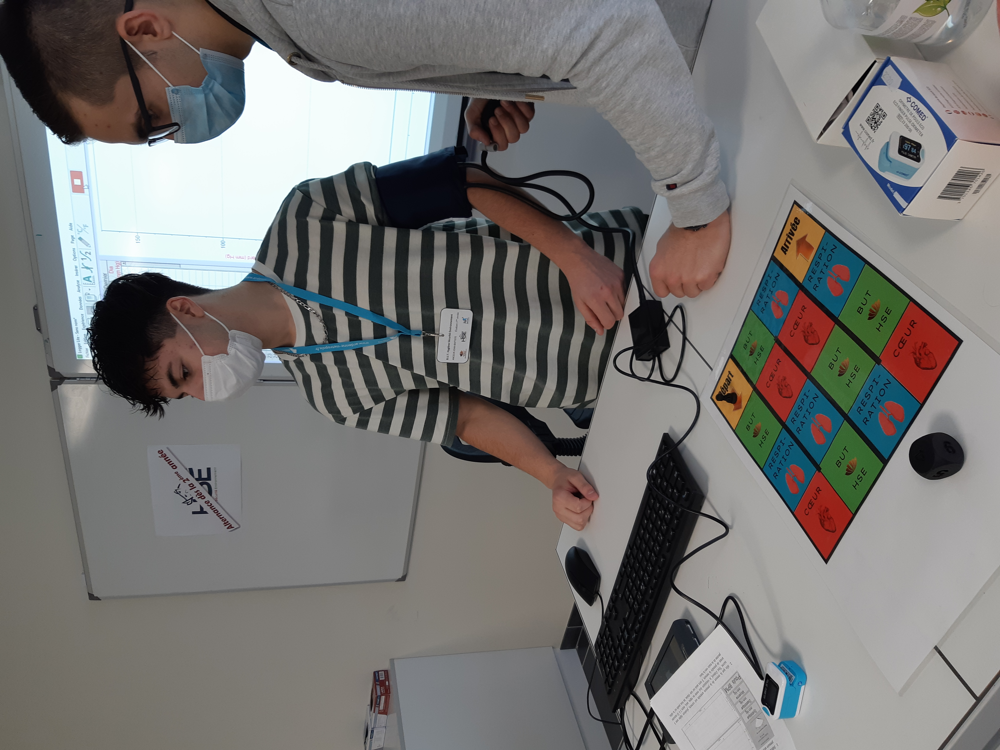

SEMESTRE 1
Voici la liste des SAE que j'ai pu réaliser
lors du Semestre 1 du BUT HSE.
SAÉ 1.01 : Analyser les risques professionnels d'une situation de travail simple Voici mon travail (MP4). Dans le cadre de cette SAE, j'ai du réalisé une vidéo de sensibilisation, dans laquelle j'explique l'importance des pictogrammes relatifs aux risques chimiques au sein de l'entreprise NPL, spécialisée dans l'emboutissage de pièces. Mon rôle était de mettre en évidence l'importance de ces pictogrammes et de veiller à leur présence. Pendant cette expérience, j'ai développé des compétences en animation grâce à l'utilisation de Canva. J'ai du me renseigner sur l'entreprise NPL qui est basé à Charleville-Mézières. J'ai également appris à recueillir et résumer des informations pertinentes pour mon sujet. De plus, j'ai dû évaluer les risques chimiques présents dans l'entreprise NPL conformément aux réglementations en vigueur.
 SAÉ 1.02 : Maîtriser les risques pour les populations et les installations dans un établissement recevant du public (ERP) J'ai effectué une visite et une analyse approfondie d'un ERP, la Maison du Campus à Charleville-Mézières. Au cours de cette analyse, j'ai examiné les diverses sources de danger et les mesures de prévention déjà en place. J'ai également formulé des recommandations pour améliorer la sécurité et j'ai étudié les différents flux présents dans l'établissement. Les connaissances que j'ai acquises comprennent les notions de "Sources", "Flux" et "Fluide". J'ai développé la compétence d'analyser un bâtiment ERP et de proposer des actions visant à réduire les risques. De plus, j'ai appris à appliquer le principe Technique, Humain et Organisation pour aborder ces problématiques.
SAÉ 1.02 : Maîtriser les risques pour les populations et les installations dans un établissement recevant du public (ERP) J'ai effectué une visite et une analyse approfondie d'un ERP, la Maison du Campus à Charleville-Mézières. Au cours de cette analyse, j'ai examiné les diverses sources de danger et les mesures de prévention déjà en place. J'ai également formulé des recommandations pour améliorer la sécurité et j'ai étudié les différents flux présents dans l'établissement. Les connaissances que j'ai acquises comprennent les notions de "Sources", "Flux" et "Fluide". J'ai développé la compétence d'analyser un bâtiment ERP et de proposer des actions visant à réduire les risques. De plus, j'ai appris à appliquer le principe Technique, Humain et Organisation pour aborder ces problématiques.
SAÉ 1.03 : Contribuer à la gestion d'une situation d'urgence Dans le cadre de cette SAE, nous avons mis en scène un scénario où un élève était exposé à une substance chimique dangereuse sur la peau. Mon rôle consistait à simuler accidentellement la projection d'acide chlorhydrique sur mon camarade, puis à alerter le responsable de la santé, de la sécurité et de l'environnement (HSE) et à faciliter l'arrivée des intervenants. J'ai également effectué des recherches sur les fiches de sécurité relatives à l'acide chlorhydrique afin de repérer les risques associés à cette situation. À travers cette expérience, j'ai développé plusieurs compétences importantes. Tout d'abord, j'ai appris à réagir face à une situation d'urgence de manière appropriée. J'ai également amélioré mes compétences en organisation en travaillant avec un groupe important dans le cadre de cette activité. De plus, j'ai acquis la capacité de collecter des informations pertinentes et de les intégrer dans le contexte de cette activité d'apprentissage en milieu professionnel. J'ai également eu l'opportunité de concevoir un plan de gestion pour faire face à une situation d'urgence et de créer un exercice d'évacuation dans un établissement recevant du public (ERP) ainsi que des procédures de premiers secours aux personnes.
SAÉ 1.04 : Animer en équipe un stand en lien avec les problématiques HSE lors d'un forum Dans le cadre de l'animation d'un Stand HSE visant à sensibiliser un public non initié au domaine de l'HSE, j'ai réalisé divers jeux et flyers. Ces réalisations m'ont permis d'acquérir une aisance dans la création d'affiches et de flyers à l'aide de l'outil Canva. De plus, j'ai développé une meilleure aisance à l'oral en adaptant mon vocabulaire en fonction de mon interlocuteur. En outre, ces expériences m'ont permis de prendre conscience de l'importance de lier les sujets HSE aux problématiques locales, aux actualités et aux contextes des entreprises et des collectivités partenaires. Cela a renforcé ma capacité à présenter ces concepts de manière pertinente et à susciter l'intérêt du public en établissant des liens concrets avec leur quotidien.